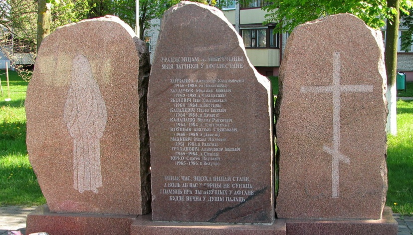

Памятник воинам-интернационалистам

Памятник в честь воинов, погибших в Афганистане был открыт в мае 2003 года. На памятнике указаны имена девятерых уроженцев Лунинетчины.
Памятник в честь воинов, погибших в Афганистане был открыт в мае 2003 года. На памятнике указаны имена девятерых уроженцев Лунинетчины.